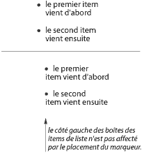

Contenu
Dans certains cas, les auteurs peuvent souhaiter que les agents utilisateurs puissent représenter un contenu qui n'apparaît pas dans l'arbre du document. Une liste numérotée en est une illustration familière, où l'auteur ne veut pas avoir à fournir la liste des numéros explicitement, préférant laisser l'agent utilisateur les générer automatiquement. De façon similaire, l'auteur peut vouloir que le mot "Illustration" soit inséré avant la légende d'une illustration, ou encore, "Chapitre 7" avant le titre du septième chapitre. Les agents utilisateurs, notamment pour des appareils audio ou braille, devraient être capables d'effectuer ce genre d'opération.
En CSS2, plusieurs mécanismes peuvent générer un contenu :
On décrit plus loin le mécanisme associé à la propriété 'content'.
L'auteur spécifie le style et l'emplacement d'un contenu généré au moyen des pseudo-éléments :before et :after. Comme leurs noms l'indiquent, ceux-ci précisent l'emplacement du contenu avant ou après celui d'un élément de l'arbre du document. La propriété 'content', utilisée en conjonction avec eux, spécifie la nature de ce qui est inséré.
Par exemple, cette règle insère la chaîne "Note : " avant le contenu de chacun des éléments P dont l'attribut "class" a la valeur "note" :
P.note:before { content: "Note : " }
Les objets de mise en forme (ex. les boîtes) générés par un élément comprennent également le contenu généré. Ainsi, en changeant la feuille de style précédente pour :
P.note:before { content: "Note : " }
P.note { border: solid green }
ceci produirait une bordure verte en trait plein autour du paragraphe, y compris la chaîne rajoutée.
Les pseudo-éléments :before et :after héritent de chacune des propriétés, celles qui sont transmissibles, de l'élément de l'arbre du document auquel ceux-ci se rattachent.
Par exemple, les règles suivantes insèrent un guillemet ouvrant avant chacun des éléments Q. Ce guillemet aura une couleur rouge et sa police sera la même que celle employée ailleurs dans ces éléments :
Q:before {
content: open-quote;
color: red
}
Dans les déclarations avec les pseudo-éléments :before ou :after, les propriétés non héritées prennent leur valeur initiale.
Ainsi, dans l'exemple précédent, la valeur initiale de la propriété 'display' étant 'inline', le guillemet s'inscrit dans une boîte en-ligne (c.à.d. celle-ci se trouve sur la même ligne que le texte initial de l'élément). Dans celui qui suit, la propriété 'display' a la valeur explicite 'block', le texte en insertion s'inscrit dans une boîte de bloc :
BODY:after {
content: "Fin";
display: block;
margin-top: 2em;
text-align: center;
}
Noter qu'un agent utilisateur auditif synthétiserait le mot "Fin" après avoir rendu tout le contenu de l'élément BODY.
Les agents utilisateurs doivent ignorer les propriétés suivantes avec les pseudo-éléments :before et :after : les propriétés 'position', 'float', celles des listes et celles des tables.
Les pseudo-éléments :before et :after admettent certaines valeurs en conjonction avec la propriété 'display' :
Remarque : D'autres valeurs pourraient être admises dans les versions ultérieures de CSS.
| Valeur : | [ <chaîne> | <uri> | <compteur> | attr(X) | open-quote | close-quote | no-open-quote | no-close-quote ]+ | inherit |
| Initiale : | chaîne vide |
| S'applique à : | les pseudo-éléments :before et :after et les éléments avec 'display: marker' |
| Héritée : | non |
| Pourcentage : | sans objet |
| Médias : | tous |
Cette propriété est utilisée en conjonction avec les pseudo-éléments :before et :after pour générer un contenu dans un document. Ces pseudo-éléments admettent les valeurs suivantes pour la propriété 'display' :
Les significations des valeurs sont :
La propriété 'display' contrôle le placement du contenu dans une boîte de bloc, en-ligne ou de marqueur.
Les auteurs devraient placer les déclarations de la propriété 'content' dans des règles @media quand le contenu dépend du type du média. Par exemple, un texte littéral peut convenir à tous les types de médias, mais les images seulement aux groupes de médias visuel et bitmap, et les fichiers de sons seulement au groupe de média auditif.
Cette règle fait jouer un fichier son à la fin d'une citation (voir le chapitre sur les feuilles de style auditives pour d'autres mécanismes) :
@media aural {
BLOCKQUOTE:after { content: url("beautiful-music.wav") }
}
La règle suivante insère le texte de l'attribut HTML "alt" avant l'image. Si l'image n'est pas affichée, le lecteur verra quand même ce texte :
IMG:before { content: attr(alt) }
Les auteurs peuvent produire des retours à la ligne dans le contenu généré en écrivant la séquence de masquage "\A" dans l'une des chaînes après la propriété 'content'. Ceci insère un retour à la ligne forcé, semblable à l'élément BR en HTML. Voir les chapitres "Les chaînes" et "Les caractères et la casse" pour informations.
H1:before {
display: block;
text-align: center;
content: "chapter\A hoofdstuk\A chapitre"
}
Le contenu généré n'altère pas l'arbre du document. Et, en particulier, celui-ci n'est pas réintroduit dans le processeur du langage du document (par exemple pour y être reinterprété).
Remarque : Dans des versions ultérieures, la propriété 'content' pourrait accepter d'autres valeurs, qui lui permettrait de modifier le style de certaines parties du contenu généré, en CSS2, l'ensemble du contenu des pseudo-éléments :before et :after recevant le même style.
Les cas suivants peuvent survenir :
Voici un exemple de titre en enfilade (N.D.T. run-in) avec un pseudo-élément :after, suivi par un paragraphe avec un pseudo-élément :before. Les pseudo-éléments sont tous de type en-ligne (par défaut). Soit cette feuille de style :
H3 { display: run-in }
H3:after { content: " : " }
P:before { content: "... " }
quand on l'applique à ce document source :
<H3>Les Centaures</H3> <P>ont des sabots <P>ont une queue
Une mise en forme visuelle en serait :
Les Centaures : ... ont des sabots ... ont une queue
En CSS2, les auteurs peuvent demander aux agents utilisateurs de représenter les marques de citation, en fonction du style et du contexte. La propriété 'quotes' spécifie des paires de guillemets pour chaque niveau d'imbrication des citations. C'est la propriété 'content' qui permet la mise en œuvre de ces marques, en les insérant avant ou après les citations.
Cette propriété spécifie des guillemets, quel que soit le nombre de citations imbriquées. Les significations des valeurs sont :
Par exemple, la feuille de style suivante :
/* Spécifie des paires de guillemets sur deux niveaux et pour deux langues */
Q:lang(en) { quotes: '"' '"' "'" "'" }
Q:lang(no) { quotes: "«" "»" "<" ">" }
/* Insère des guillemets avant et après le contenu d'un élément Q */
Q:before { content: open-quote }
Q:after { content: close-quote }
celle-ci appliquée à cet extrait, en anglais :
<HTML lang="en">
<HEAD>
<TITLE>Quotes</TITLE>
</HEAD>
<BODY>
<P><Q>Quote me!</Q>
</BODY>
</HTML>
un agent utilisateur pourrait le rendre ainsi :
"Quote me!"
alors que pour cet extrait-ci, en norvégien :
<HTML lang="no">
<HEAD>
<TITLE>Citations</TITLE>
</HEAD>
<BODY>
<P><Q>Trøndere gråter når <Q>Vinsjan på kaia</Q> blir deklamert.</Q>
</BODY>
</HTML>
l'agent utilisateur donnerait :
«Trøndere gråter når <Vinsjan på kaia> blir deklamert.»
Remarque : Dans l'exemple précédent, bien que les guillemets désignés par la propriété 'quotes' se trouvent facilement sur un clavier, une typographie de meilleure qualité demanderait des caractères supplémentaires. Le tableau informatif ci-après donne une liste de quelques marques de citation issues de ISO 10646 :
| Aspect approximatif | Code ISO 10646 (hexadécimal) | Description |
|---|---|---|
| " | 0022 | MARQUE DE CITATION [le guillemet double en ASCII] |
| ' | 0027 | APOSTROPHE [le guillemet simple en ASCII] |
| < | 2039 | MARQUE DE CITATION CHEVRON SIMPLE GAUCHE |
| > | 203A | MARQUE DE CITATION CHEVRON SIMPLE DROIT |
| « | 00AB | MARQUE DE CITATION CHEVRON DOUBLE GAUCHE [guillemet français ouvrant] |
| » | 00BB | MARQUE DE CITATION CHEVRON DOUBLE DROIT [guillemet français fermant] |
| ‘ | 2018 | GUILLEMET SIMPLE GAUCHE HAUT [guillemet anglais ouvrant simple, ou apostrophe typographique] |
| ’ | 2019 | GUILLEMET SIMPLE DROIT HAUT [guillemet anglais fermant simple] |
| “ | 201C | GUILLEMET DOUBLE GAUCHE HAUT [guillemet anglais ouvrant double] |
| ” | 201D | GUILLEMET DOUBLE DROIT HAUT [guillemet anglais fermant double] |
| „ | 201E | GUILLEMET DOUBLE BAS [guillemet double bas] |
Les valeurs 'open-quote' et 'close-quote' de la propriété 'content' insèrent les guillemets aux endroits appropriés du document. L'une des chaînes issues des valeurs de la propriété 'quotes' se substituent à chaque survenue de 'open-quote', ou ' close-quote', selon le niveau d'imbrication.
La valeur 'open-quote' se rapporte au premier guillemet d'une paire donnée, celle de 'close-quote' au second guillemet. L'utilisation de telle ou telle paire de guillemet dépend de la profondeur d'imbrication de la citation : le nombre d'apparitions de 'open-quote' dans tout le texte généré avant la citation en question, moins le nombre d'apparitions de 'close-quote'. Pour une profondeur égale à 0, la première paire est retenue, pour une profondeur de 1, c'est la deuxième paire, etc. Si la profondeur est supérieure au nombre de paires, la dernière paire est réutilisée. Une valeur de 'close-quote' qui rendrait la profondeur négative est incorrecte et ignorée : la profondeur reste à 0 et aucun guillemet n'est rendu (bien que le reste de la valeur de la propriété 'content' soit quand même inséré).
Noter que cette profondeur de citation est indépendante de l'imbrication du document source ou de la structure de mise en forme.
Certains styles typographiques requièrent des guillemets ouvrants avant chacun des paragraphes si la citation s'étend sur ceux-ci, le dernier paragraphe se terminant avec un guillemet fermant. En CSS, on peut réaliser cet effet en insérant des guillemets fermants "fantômes". Le mot-clé 'no-close-quote' décrémente ainsi le niveau de citation, sans pour autant faire apparaître de guillemet fermant.
Cette feuille de style place des guillemets ouvrants devant chaque paragraphe d'un élément BLOCKQUOTE, et un guillemet fermant à la fin du dernier :
BLOCKQUOTE P:before { content: open-quote }
BLOCKQUOTE P:after { content: no-close-quote }
BLOCKQUOTE P.dernier:after { content: close-quote }
Ceci s'appuyant sur le fait que le dernier paragraphe a la classe "dernier", car il n'existe pas de sélecteurs qui puissent correspondre au dernier enfant d'un élément.
De façon symétrique, le mot-clé 'no-open-quote', qui ne fait pas apparaître de guillemet ouvrant, incrémente la profondeur de citation d'une unité.
Remarque : Quand une citation est dans une langue différente de celle du texte qui la contient, on utilise habituellement les marques de citation de la langue de ce texte, et non pas celles de la citation en question.
Par exemple, une citation en français dans un texte en anglais :
The device of the order of the garter is “Honni soit qui mal y pense”.et ici, une citation en anglais dans un texte en français :
Il disait : « Il faut faire défiler la bande en “fast forward”. »
Cette feuille de style-ci va spécifier les valeurs de la propriété 'quotes' de manière à ce que les guillemets ouvrants et fermants fonctionnent correctement pour tous les éléments. Les règles s'appliquent aux documents de langue anglaise, française, ou bien ceux dans les deux langues. On associe une règle à chaque langue supplémentaire. Noter l'emploi du combinateur (">"), concernant les enfants de l'élément, pour faire correspondre les guillemets à la langue contextuelle :
[LANG|=fr] > * { quotes: "« " " »" "\201C" "\201D" }
[LANG|=en] > * { quotes: "\201C" "\201D" "\2018" "\2019" }
On a tapé ici les caractères représentant les marques de citation anglaises dans une forme que la plupart des gens peuvent utiliser. Quand on peut les taper directement, il apparaissent ainsi :
[LANG|=fr] > * { quotes: "« " " »" "“" "”" }
[LANG|=en] > * { quotes: "“" "”" "‘" "’" }
En CSS2, le numérotage automatique est régi par deux propriétés, 'counter-increment' et 'counter-reset'. Les compteurs définis par celles-ci sont employés par les fonctions counter() et counters() de la propriété 'content'.
| Valeur : | [ <identificateur> <entier>? ]+ | none | inherit |
| Initiale : | none |
| S'applique à : | tous les éléments |
| Héritée : | non |
| Pourcentage : | sans objet |
| Médias : | tous |
| Valeur : | [ <identificateur> <entier>? ]+ | none | inherit |
| Initiale : | none |
| S'applique à : | tous les éléments |
| Héritée : | non |
| Pourcentage : | sans objet |
| Médias : | tous |
La propriété 'counter-increment' accepte un ou plusieurs noms de compteurs (des identificateurs), chacun d'eux étant suivi d'un entier optionnel. Cet entier indique la valeur de l'incrémentation du compteur à chaque fois que survient l'élément. L'incrémentation par défaut est d'une unité. Les entiers nuls ou négatifs sont admis.
La propriété 'counter-reset' contient aussi une liste de noms de compteurs, un ou plusieurs, chacun d'eux étant suivi d'un entier optionnel. Cet entier indique la valeur que prend un compteur à chaque fois que survient l'élément. Par défaut, celui-ci a une valeur nulle.
Quand la propriété 'counter-increment' se réfère à un compteur qui est hors de portée (voir plus loin) de la propriété 'counter-reset', le compteur est considéré avoir été mis à zéro par l'élément racine.
Voici une manière de numéroter des chapitres et leurs sections, tel que "Chapitre 1", "1.1", "1.2", etc. :
H1:before {
content: "Chapitre " counter(chapitre) ". ";
counter-increment: chapitre; /* Ajoute 1 au chapitre */
counter-reset: section; /* Remet la section à zéro */
}
H2:before {
content: counter(chapitre) "." counter(section) " ";
counter-increment: section;
}
Quand un élément incrémente, ou remet à zéro, un compteur, et dans le même temps, l'utilise (au travers de la propriété 'content' du pseudo-élément :before ou :after qui lui est attaché), le compteur n'est utilisé qu'après avoir été incrémenté, ou remis à zéro.
Quand un élément, à la fois, remet à zéro et incrémente un compteur, la remise à zéro intervient avant l'incrémentation.
La propriété 'counter-reset' suit les règles de cascade, ainsi la feuille de style :
H1 { counter-reset: section -1 }
H1 { counter-reset: imagenum 99 }
celle-ci va seulement remettre à zéro le compteur 'imagenum'. Pour que les deux compteurs le soient, il faut les réunir :
H1 { counter-reset: section -1 imagenum 99 }
Les compteurs sont "auto-imbriquants", dans le sens oû la réutilisation d'un compteur dans un élément enfant crée automatiquement une nouvelle instance de celui-ci. Ceci a son importance dans des cas comme les listes en HTML, où les éléments peuvent être imbriqués dans eux-mêmes à des profondeurs arbitraires. Il serait sinon impossible de définir des noms de compteurs uniques pour chaque niveau d'imbrication.
Ainsi, ce qui suit suffit pour numéroter des items de liste imbriqués. Le résultat est très semblable à celui qui serait obtenu en appliquant 'display:list-item' et 'list-style:inside' sur l'élément LI :
OL { counter-reset: item }
LI { display: block }
LI:before { content: counter(item) ". "; counter-increment: item }
L'auto-imbrication se base sur le principe que chaque élément, ayant une propriété 'counter-reset' pour un compteur X, crée un nouveau compteur X, dont la portée va s'étendre à l'élément en question, aux descendants de celui-ci, et à ceux des éléments précédents de même parenté et leurs descendants.
Dans l'exemple précédent, un élément OL va créer un compteur et tous les enfants de cet élément vont se référer à ce dernier.
Si on note par item[n] la neme instance du compteur "item", par "(" et ")" le début et la fin d'une portée, l'extrait HTML suivant utilisant ce compteur (et la feuille de style précédente associée à celui-ci :
<OL> <!-- (met item[0] à 0 -->
<LI>item <!-- incrémente item[0] (= 1) -->
<LI>item <!-- incrémente item[0] (= 2) -->
<OL> <!-- (met item[1] à 0 -->
<LI>item <!-- incrémente item[1] (= 1) -->
<LI>item <!-- incrémente item[1] (= 2) -->
<LI>item <!-- incrémente item[1] (= 3) -->
<OL> <!-- (met item[2] à 0 -->
<LI>item <!-- incrémente item[2] (= 1) -->
</OL> <!-- ) -->
<OL> <!-- (met item[3] à 0 -->
<LI> <!-- incrémente item[3] (= 1) -->
</OL> <!-- ) -->
<LI>item <!-- incrémente item[1] (= 4) -->
</OL> <!-- ) -->
<LI>item <!-- incrémente item[0] (= 3) -->
<LI>item <!-- incrémente item[0] (= 4) -->
</OL> <!-- ) -->
<OL> <!-- (remet item[4] à 0 -->
<LI>item <!-- incrémente item[4] (= 1) -->
<LI>item <!-- incrémente item[4] (= 2) -->
</OL> <!-- ) -->
La fonction 'counters()' génère une chaîne composée des valeurs de tous les compteurs de même nom, celles-ci séparées par une chaîne donnée.
Cette feuille de style numérote les articles d'une liste imbriquée, tel que "1", "1.1", "1.1.1", etc. :
OL { counter-reset: item }
LI { display: block }
LI:before { content: counters(item, "."); counter-increment: item }
Par défaut, les compteurs sont mis en forme avec des nombres décimaux, mais chacun des styles disponibles pour la propriété 'list-style-type' peuvent leur être appliqués.
Voici la notation correspondant au style par défaut :
counter(nom)
et celle correspondant à un style donné :
counter(nom, 'list-style-type')
Tous les styles sont admis, y compris 'disc', 'circle', 'square' et 'none'.
H1:before { content: counter(chno, upper-latin) ". " }
H2:before { content: counter(section, upper-roman) " - " }
BLOCKQUOTE:after { content: " [" counter(bq, hebrew) "]" }
DIV.note:before { content: counter(notecntr, disc) " " }
P:before { content: counter(p, none) }
Un élément qui n'est pas affiché (sa propriété 'display' ayant la valeur 'none'), ne peut ni incrémenter un compteur ni le remettre à zéro.
Dans cet exemple, les éléments H2 ayant une classe "secret" n'incrémente pas 'count2' :
H2.secret {counter-increment: count2; display: none}
Par contre, les éléments dont la valeur de la propriété 'visibility' est 'hidden', incrémentent les compteurs.
En CSS, la plupart des éléments de type bloc génèrent une boîte de bloc principale. Dans ce chapitre, nous allons voir comment deux mécanismes CSS agissent sur un élément pour le faire produire deux boîtes : une boîte de bloc principale (pour le contenu de l'élément) et une boîte de marqueur séparée (qui contient des décorations telles qu'une puce, une image ou un nombre). À la différence des contenus de :before et :after, la boîte de marqueur n'affecte pas l'emplacement de la boîte principale, quel que soit le schéma de positionnement.
Apparaissant avec CSS2, on appelle le plus général de ces deux mécanismes les marqueurs. L'autre mécanisme, plus limité, fait appel aux propriétés de liste issues de CSS1. Ces dernières permettent aux auteurs une mise en place rapide pour un grand nombre de scénarios courants où interviennent des listes ordonnées, ou non. Cependant, les auteurs peuvent avoir un contrôle précis du contenu et de l'emplacement des marqueurs. On peut utiliser ceux-ci avec des compteurs pour créer de nouvelles listes, pour numéroter les notes de marge et plus encore.
Voici, par exemple, comment on peut employer des marqueurs pour rajouter un point après chacun des numéros des items d'une liste. Soit ce document HTML et sa feuille de style :
<!DOCTYPE HTML PUBLIC "-//W3C//DTD HTML 4.0//EN">
<HTML>
<HEAD>
<TITLE>Créer une liste avec des marqueurs</TITLE>
<STYLE type="text/css">
LI:before {
display: marker;
content: counter(compteur, lower-roman) ".";
counter-increment: compteur;
}
</STYLE>
</HEAD>
<BODY>
<OL>
<LI> Voici le premier item.
<LI> Voici le deuxième item.
<LI> Voici le troisième item.
</OL>
</BODY>
</HTML>
ceci devrait donner quelque chose comme :
i. Voici le premier item. ii. Voici le deuxième item. iii. Voici le troisième item.
Avec des sélecteurs descendants et des sélecteurs d'enfants, il est possible de spécifier divers types de marqueurs en fonction de la profondeur de listes imbriquées.
On crée un marqueur en spécifiant la valeur 'marker' à la propriété 'display' dans un pseudo-élément :before ou :after. Alors que les contenus de ces pseudo-éléments, ayant les valeurs 'block' et 'inline', font partie de la boîte principale générée par l'élément, un contenu avec la valeur 'marker' est mis en forme dans une boîte indépendante, en dehors de la boîte principale. Les boîtes des marqueurs s'inscrivent dans une seule ligne (c.à.d. dans une boîte de ligne), celles-ci ne sont pas aussi souples d'emploi que les flottants. Une boîte de marqueur n'est créée que si la propriété 'content' du pseudo-élément génère effectivement un contenu.
Les boîtes de marqueurs ont des espacements et des bordures, mais pas de marges.
Avec le pseudo-élément :before, la ligne de base du texte
de la boîte de marqueur sera alignée verticalement avec celle du texte
de la première ligne de contenu boîte de ligne de la boîte principale.
Si celle-ci ne contient pas de texte boîte de ligne,
ou si elle contient une boîte de bloc se trouvant au-dessus de la première boîte de ligne,
le bord externe haut de la boîte de marqueur sera aligné avec le bord externe haut de la boîte principale.
Avec le pseudo-élément :after, la ligne de base du texte
de la boîte de marqueur sera alignée verticalement avec celle du texte
de la dernière ligne de contenu boîte de ligne de la boîte principale.
Si celle-ci ne contient pas de texte boîte de ligne,
ou si elle contient une boîte de bloc se trouvant en-dessous de la dernière boîte de ligne,
le bord externe bas de la boîte de marqueur sera aligné avec le bord externe bas de la boîte principale.
La hauteur d'une boîte de marqueur est donnée par la propriété 'line-height'. La boîte de marqueur d'un pseudo-élément :before (ou :after) entre dans le calcul de la hauteur de la première boîte de ligne (ou la dernière) de la boîte principale. Ainsi, les marqueurs sont alignés sur la première ligne, ou la dernière, du contenu d'un élément, bien que ceux-ci occupent des boîtes distinctes. Quand il n'y a pas de première boîte de ligne, ou de dernière, la boîte de marqueur établit elle-même sa propre boîte de ligne.
L'alignement vertical d'une boîte de marqueur dans sa boîte de ligne est donné par la propriété 'vertical-align'.
Si la valeur de la propriété 'width' est 'auto', la largeur du contenu de la boîte de marqueur correspond à celle du contenu, et, pour une autre valeur, à celle spécifiée dans la propriété 'width'. Quand la valeur spécifiée par 'width' est inférieure à celle de la largeur effective du contenu, c'est la propriété 'overflow' qui précise la manière du débordement. Les boîtes de marqueurs peuvent recouvrir leur boîte principale. Quand la valeur spécifiée par 'width' est supérieure à celle de la largeur effective du contenu, c'est la propriété 'text-align' qui détermine l'alignement horizontal du contenu de la boîte de marqueur.
La propriété 'marker-offset' spécifie le décalage horizontal entre une boîte de marqueur et la boîte principale à laquelle celle-ci est associée. Ce décalage correspond à la distance entre les bords de leurs bordures les plus proches. Remarque : Si un marqueur s'écoule à la droite d'un flottant dans un contexte de mise en forme de gauche à droite, la boîte principale s'écoulera le long du flanc droit du flottant, mais la boîte de marqueur apparaîtra à la gauche du flottant. Le bord de la bordure gauche de la boîte principale venant contre le bord gauche du flottant (voir la description des flottants), et les boîtes des marqueurs se trouvant en dehors du bord de la bordure de leur boîte principale, le marqueur se trouvera ainsi à gauche du flottant. De la même façon et inversement, dans un contexte de mise en forme de droite à gauche et pour un marqueur s'écoulant à la gauche d'un flottant.
Quand la propriété 'display' a la valeur 'marker' pour le contenu d'un élément, celui-ci ayant une valeur 'display: list-item', alors c'est une boîte de marqueur générée par le pseudo-élément :before qui remplace le marqueur normal de l'item de liste.
Dans l'exemple, le contenu est centré dans une boîte de marqueur de largeur fixe. Soit le document :
<!DOCTYPE HTML PUBLIC "-//W3C//DTD HTML 4.0//EN">
<HTML>
<HEAD>
<TITLE>Alignement du contenu dans une boîte de marqueur</TITLE>
<STYLE type="text/css">
LI:before {
display: marker;
content: "(" counter(compteur) ")";
counter-increment: compteur;
width: 6em;
text-align: center;
}
</STYLE>
</HEAD>
<BODY>
<OL>
<LI> Voici l'item numéro 1.
<LI> Voici l'item numéro 2.
<LI> Voici l'item numéro 3.
</OL>
</BODY>
</HTML>
celui-ci pourrait être rendu par :
(1) Voici l'item
numéro 1.
(2) Voici l'item
numéro 2.
(3) Voici l'item
numéro 3.
Cet exemple-ci crée des marqueurs avant et après les items d'une liste :
Soit le document :
<!DOCTYPE HTML PUBLIC "-//W3C//DTD HTML 4.0//EN">
<HTML>
<HEAD>
<TITLE>Des marqueurs avant et après les items d'une liste</TITLE>
<STYLE type="text/css">
@media screen, print {
LI:before {
display: marker;
content: url("smiley.gif");
}
LI:after {
display: marker;
content: url("sad.gif");
}
}
</STYLE>
</HEAD>
<BODY>
<UL>
<LI>le premier item vient d'abord
<LI>le second item vient ensuite
</UL>
</BODY>
</HTML>
celui-ci pourrait être rendu ainsi (on utilise une représentation en caractères ASCII à la place des images) :
:-) le premier item
vient d'abord :-(
:-) le second item
vient ensuite :-(
L'exemple suivant utilise des marqueurs pour numéroter des notes (de paragraphes).
Soit le document :
<!DOCTYPE HTML PUBLIC "-//W3C//DTD HTML 4.0//EN">
<HTML>
<HEAD>
<TITLE>Des marqueurs pour numéroter des notes4</TITLE>
<STYLE type="text/css">
P { margin-left: 12 em; }
@media screen, print {
P.Note:before {
display: marker;
content: url("note.gif")
"Note " counter(compteur-de-note) " :";
counter-increment: compteur-de-note;
text-align: left;
width: 10em;
}
}
</STYLE>
</HEAD>
<BODY>
<P>Voici le premier paragraphe de ce document.</P>
<P CLASS="Note">Maintenant, un paragraphe très court.</P>
<P>Et le paragraphe final.</P>
</BODY>
</HTML>
celui-ci pourrait être rendu ainsi :
Voici le premier paragraphe
de ce document.
Note 1 : Maintenant, un paragraphe
très court.
Et le paragraphe final.
| Valeur : | <longueur> | auto | inherit |
| Initiale : | auto |
| S'applique à : | ceux des éléments dont la valeur de la propriété 'display' est 'marker' |
| Héritée : | non |
| Pourcentage : | sans objet |
| Médias : | visuel |
Cette propriété spécifie la distance entre les bords des bordures les plus proche d'une boîte de marqueur et la boîte principale qui lui est associée. Ce décalage peut être défini par l'utilisateur (<longueur>) ou bien par l'agent utilisateur (pour une valeur 'auto'). Les valeurs peuvent être négatives, mais leur interprétation peut dépendre de l'implémentation.
L'exemple suivant montre comment utiliser les marqueurs pour ajouter un point après chaque item numéroté d'une liste. Soit ce document HTML et sa feuille de style :
<!DOCTYPE HTML PUBLIC "-//W3C//DTD HTML 4.0 Transitional//EN">
<HTML>
<HEAD>
<TITLE>Exemple 5 avec les marqueurs</TITLE>
<STYLE type="text/css">
P { margin-left: 8em } /* Fait de la place pour les compteurs */
LI:before {
display: marker;
marker-offset: 3em;
content: counter(compteur, lower-roman) ".";
counter-increment: compteur;
}
</STYLE>
</HEAD>
<BODY>
<P> Voici le long paragraphe qui précède...
<OL>
<LI> Le premier item.
<LI> Le deuxième item.
<LI> Le troisième item.
</OL>
<P> Et le long paragraphe qui suit...
</BODY>
</HTML>
ceci devrait donner quelque chose comme :
Voici le long paragraphe
qui précède...
i. Le premier item.
ii. Le deuxième item.
iii. Le troisième item.
Et le long paragraphe
qui suit...
Les propriétés de liste permettent une mise en forme limitée des listes. Tout comme les marqueurs, aux champs d'action plus étendus, un élément dont la propriété 'display' a la valeur 'list-item' génère une boîte principale pour son contenu ainsi qu'une boîte de marqueur facultative. Les propriétés de liste permettent de préciser le type (image, glyphe ou nombre) et la position d'une boîte de marqueur par rapport à la boîte principale (à l'extérieur, ou à l'intérieur avant le contenu). Par contre, celles-ci ne permettent pas de spécifier un style distinct (de couleur, de police, d'alignement, etc.) pour le marqueur de liste ou la position de celui-ci par rapport à la boîte principale.
De plus, si on utilise un marqueur M (créé par 'display: marker') avec un item de liste créé par ces propriétés de liste, le marqueur M remplace le marqueur normal d'item de liste.
En employant les propriétés de liste, les propriétés d'arrière-plan ne s'appliquent qu'à la boîte principale, la boîte de marqueur en dehors restant transparente. Les marqueurs autorisent un plus grand contrôle sur le style d'une boîte de marqueur.
| Valeur : | disc | circle | square | decimal | decimal-leading-zero | lower-roman | upper-roman | lower-greek | lower-alpha | lower-latin | upper-alpha | upper-latin | hebrew | armenian | georgian | cjk-ideographic | hiragana | katakana | hiragana-iroha | katakana-iroha | none | inherit |
| Initiale : | disc |
| S'applique à : | ceux des éléments dont la valeur de la propriété 'display' est 'list-item' |
| Héritée : | oui |
| Pourcentage : | sans objet |
| Médias : | visuel |
Cette propriété spécifie l'aspect du marqueur d'item de liste, quand la propriété 'list-style-image' a la valeur 'none' ou quand l'image sur laquelle pointe l'adresse URI n'est pas disponible. La valeur 'none' spécifiant l'absence de marqueur, trois types de marqueurs existent autrement : à partir de glyphes, de systèmes de numérotation et de systèmes alphabétiques. Remarque : Les listes numérotées sont plus accessibles, la navigation à l'intérieur de celles-ci étant plus facile.
Les valeurs de glyphes sont disc, circle et square. Leur rendu exact dépend de l'agent utilisateur.
Les valeurs pour les systèmes de numérotation sont :
Quand un agent utilisateur ne reconnaît pas un système de numérotation, celui-ci devrait se rabattre sur 'decimal'.
Remarque : Cette spécification ne précise pas de mécanisme exact pour chacun des systèmes de numérotation (ex. comment calculer les chiffres romains). Une note ultérieure du W3C pourrait apporter des éclaircissements sur ceux-ci.
Les valeurs pour les systèmes alphabétiques sont :
Cette spécification ne définit pas comment se comportent les systèmes alphabétiques à la fin de l'alphabet. Par exemple, au-delà de 26 items de liste, le rendu pour 'lower-latin' est indéfini. C'est pourquoi, pour de longues listes, on recommande de choisir des nombres véritables.
Soit le document HTML suivant :
<!DOCTYPE HTML PUBLIC "-//W3C//DTD HTML 4.0//EN">
<HTML>
<HEAD>
<TITLE>Numérotation en chiffres romains minuscules</TITLE>
<STYLE type="text/css">
OL { list-style-type: lower-roman }
</STYLE>
</HEAD>
<BODY>
<OL>
<LI> Le premier item.
<LI> Le deuxième item.
<LI> Le troisième item.
</OL>
</BODY>
</HTML>
celui-ci pourrait apparaître ainsi :
i Le premier item. ii Le deuxième item. iii Le troisième item.
Noter que l'alignement des marqueurs de liste (ici, en justification à droite) dépend de l'agent utilisateur.
Remarque : Les versions ultérieures de CSS pourraient apporter d'autres styles de numérotation.
| Valeur : | <uri> | none | inherit |
| Initiale : | none |
| S'applique à : | ceux des éléments dont la propriété 'display' a la valeur 'list-item' |
| Héritée : | oui |
| Pourcentage : | sans objet |
| Médias : | visuel |
Cette propriété désigne l'image qui sera employée comme marqueur d'item de liste. Quand l'image est disponible, elle remplace le marqueur produit par la propriété 'list-style-type'.
Cet exemple place l'image "ellipse.png" comme marqueur au début de chacun des items de liste :
UL { list-style-image: url("http://png.com/ellipse.png") }
| Valeur : | inside | outside | inherit |
| Initiale : | outside |
| S'applique à : | ceux des éléments dont la propriété 'display' a la valeur 'list-item' |
| Héritée : | oui |
| Pourcentage : | sans objet |
| Médias : | visuel |
Cette propriété spécifie l'emplacement de la boîte de marqueur dans la boîte de bloc principale. Les significations des valeurs sont :
Par exemple :
<HTML>
<HEAD>
<TITLE>Comparaison entre les emplacements 'inside' et 'outside'</TITLE>
<STYLE type="text/css">
UL { list-style: outside }
UL.compact { list-style: inside }
</STYLE>
</HEAD>
<BODY>
<UL>
<LI>le premier item vient d'abord
<LI>le second item vient ensuite
</UL>
<UL class="compact">
<LI>le premier item vient d'abord
<LI>le second item vient ensuite
</UL>
</BODY>
</HTML>
Ceci pourrait être rendu ainsi :
 [D]
Dans un texte lu de droite à gauche, les marqueurs auraient été placés au côté droit de la boîte.
| Valeur : | [ <'list-style-type'> || <'list-style-position'> || <'list-style-image'> ] | inherit |
| Initiale : | non définie pour les propriétés raccourcies |
| S'applique à : | ceux des éléments dont la propriété 'display' a la valeur 'list-item' |
| Héritée : | oui |
| Pourcentage : | sans objet |
| Médias : | visuel |
La propriété raccourcie 'list-style' sert à réunir les trois propriétés 'list-style-type', 'list-style-image' et 'list-style-position' dans la feuille de style.
UL { list-style: upper-roman inside } /* Tout élément UL */
UL LI > UL { list-style: circle outside } /* Tout enfant UL d'un élément UL
Tout élément UL enfant d'un élément LI */
Bien qu'on puisse spécifier directement l'information de 'list-style' aux éléments d'item de liste (ex. l'élément LI en HTML), ceci requiert un soin particulier. Les deux règles suivantes semblent identiques, cependant la première comporte un sélecteur descendant et la seconde, un sélecteur d'enfant (plus spécifique) :
OL.alpha LI { list-style: lower-alpha } /* Tous les éléments LI descendant d'un élément OL */
OL.alpha > LI { list-style: lower-alpha } /* Tous les éléments LI enfant d'un élément OL */
Les auteurs, employant seulement le sélecteur descendant, pourraient ne pas obtenir le résultat escompté. Considérons ces règles :
<HTML>
<HEAD>
<TITLE>ATTENTION : Résultats inattendus, du fait de la cascade</TITLE>
<STYLE type="text/css">
OL.alpha LI { list-style: lower-alpha }
UL LI { list-style: disc }
</STYLE>
</HEAD>
<BODY>
<OL class="alpha">
<LI>niveau 1
<UL>
<LI>niveau 2
</UL>
</OL>
</BODY>
</HTML>
L'aspect souhaité aurait été d'avoir les items de liste du niveau 1 avec des marqueurs 'lower-alpha' et les items de liste du niveau 2 avec des marqueurs 'disc'. Cependant, l'ordre de la cascade va faire que la première (qui inclut une information de classe spécifique) masquera la seconde. L'emploi d'un sélecteur d'enfant dans la règle suivante amène au résultat attendu :
OL.alpha > LI { list-style: lower-alpha }
UL LI { list-style: disc }
Une autre solution aurait été de spécifier l'information de 'list-style' seulement aux éléments de type de liste :
OL.alpha { list-style: lower-alpha }
UL { list-style: disc }
Les éléments LI vont hériter des valeurs de la propriété 'list-style' au travers des éléments OL et UL. On recommande cette manière de faire pour spécifier le style des listes.
On peut combiner une valeur d'adresse URI avec chacune des autres valeurs, comme :
UL { list-style: url("http://png.com/ellipse.png") disc }
Dans cet exemple, la valeur 'disc' sera employée en cas d'indisponibilité de l'image.
Quand on spécifie la valeur 'none' pour la propriété 'list-style', les propriétés 'list-style-type' et 'list-style-image' prennent toutes deux cette même valeur 'none' :
UL { list-style: none }
Aucun marqueur d'item de liste n'est affichée.